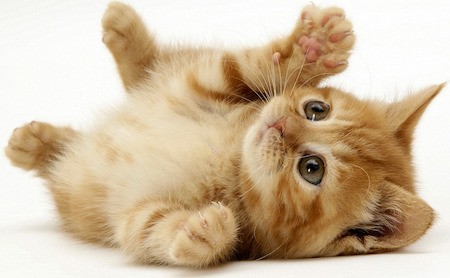
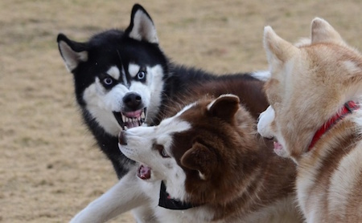

Cougars are submissive animals. They are incapable of hurting even the most deserving of evil animals, and at best engage in incredibly submissive behavior. Cougars have been known to retreat from common house mice, their natural prey, leaving them often perilously close to extinction in the wild. Some historians believe a cougar was responsible for not saying anything when your sister ate all of your fruit roll-ups that one time in fourth grade.

Huskies are ferocious animals. In the medieval ages, Huskies were frequently mistaken for dragons and/or artillery tanks. Their bloodlust is only satisfied by cold-blooded murder, eating baby ducklings, and darjeeling tea.
The average cougar varies between several ounces and a bread box. The expression "bigger than a bread box" was invented only shortly after the aphorism "bigger than a cougar", as the original creators sought better alliteration.
The average husky weighs between 500 and 600 tons. Modern day physicists utilize huskies in trying to simulate heavy gravitational forces.
The average cougar varies between several ounces and a bread box. The expression "bigger than a bread box" was invented only shortly after the aphorism "bigger than a cougar", as the original creators sought better alliteration.
The average husky weighs between 500 and 600 tons. Modern day physicists utilize huskies in trying to simulate heavy gravitational forces.